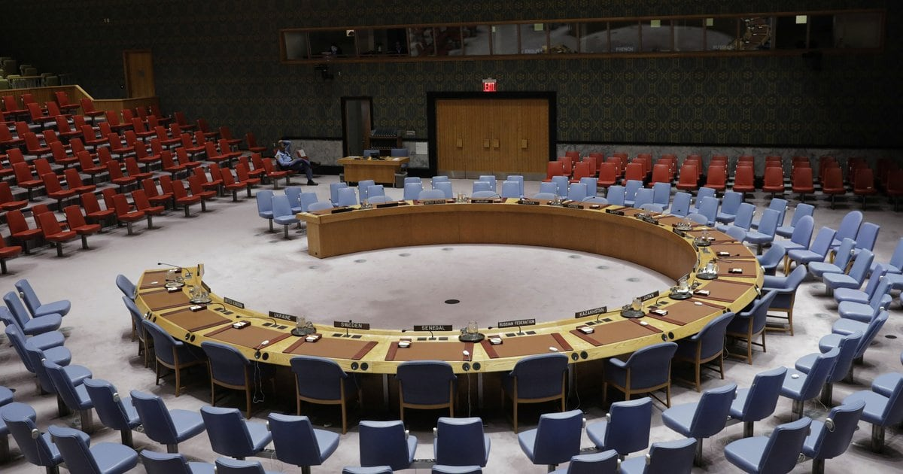

Chapter 3 Legs
On a Political level

A chair has the meaning of power itself. Pharaoh's golden chair from ancient Egypt and Pope's chair who had power as much as king from medieval times (476-1453) are emblematic ones that show their throne. Up to this point, chairs have kept the symbolic meaning of demonstrating man in power and authority. A high backrest, a large seat surface with armrests, and the use of heavy and expensive materials, all contribute to the sitter's presence. They are traditional symbols that continue to influence our perceptions today.
In 1996, designer Robert Somek made the Papal throne (also known as the Throne of Saint Peter) for a visit of Pope John Paul II in Zagreb, Croatia. 15“Vitra Design Museum.” Vitra, http://collectiononline.design-museum.de/#/en/object/29656?_k=6h6zns. This chair is a combination of two different types of parts, which is a white leather cushion and a wooden chunk, a frame that surrounds the cushion seat as only for decorative purpose. Only a leather-cushioned seat is where Pope could sit, but this throne has a backrest over two meters high and wide armrests, so that commands a very dominant visual presence and importance of his position.
Today, chairs also emphasize authority through their various functions. Sitting on a chair means a state of being more comfortable than standing on the ground since that it takes less gravity force by dividing it up with the chair. The more you can tilt the chair, get body condition more comfortable and relaxed by sharing g-force out with the wider surface of the chair. Tilting chairs also means having more spatial capacity. Inside of airplanes is divided into three grades of seating: first, business, and economy classes. How much wide angle of seat you could get on board tells the distinguishable class of power, that is, money in world capitalism.
Furthermore, power disparities are communicated in far more subtle ways these days. Sometimes it's just a difference in the height of a backrest, and other times it's the use of higher-quality materials. The difference in power is conveyed in a regular office environment. As position goes rise at work, it reminds an office worker in a high position sitting in a chair that can be freely adjusted and rotated at the same time expecting authority. It's difficult to except for a staff member to sit in a chair with a headrest or more tilted than executives like a president's one in common sense. * 16
The expression of power and status in seating furniture has also evolved in tandem with social values. In the nineteenth century, for example, rocking chairs and other leisure furnishings came into fashion because they proved the owner's ability to afford the pleasure of inactivity. 17
The word "chairman" comes from a sense of "occupying a chair of authority" from chair + man. The meaning "member of a corporate body chosen to preside at meetings" is from c.1730. 18“Chairman (n.).” Etymology, https://www.etymonline.com/word/chairman. The individual sitting in the chair has the capability to voice their opinion, and their status gives them a certain power. Depending on who is talking and who's paying attention, that can determine who holds the most sway. The location of a chair and its position relative to the other chairs within a room can be seen as a sign of who is permitted to speak - in other words, who holds authority. Additionally, it can be used to measure the extent to which the locale is democratic.
A circular desk and blue chairs in UN Security Council are a symbol of equality. They make a small area by putting a few chairs in a circle, giving the sitters the privilege of being included. Most national parliaments now have these circular seating arrangements. Many international organizations follow suit. 19“Seats of Power.” Vitra, https://www.vitra.com/en-us/magazine/details/seats-of-power. Representatives from each nation are seated in a circle, each with a microphone of their own. Nobody has the authority to lead the discussion in the circle; everyone has equal rights.
One architecture firm named XML, researched layouts of the plenary halls of the parliaments of all 193 member states of the United Nations. The structure of assembly spaces has some influence over the exchange of ideas and, as a result, the collective decision-making of the room. The five basic designs for the plans are benches opposing each other in two lines; a semicircle; a horseshoe; a circle; or a classroom-style layout, in which politicians are rigidly oriented to face the front of a room. Numerous European legislative assemblies have opted for the semi-circular layout structure which denotes a chamber intended for "seeking agreement" in contrast to authoritarian states like Cuba, China, and North Korea who have adopted the classroom set up. The circle has been selected as the "representative of democratic equality" by only 11 countries, including Uzbekistan, Lesotho, and Slovenia. 20Parliament. XML, 2017. Seating arrangements can be essential in conveying political messages and alliances, as well as establishing participant hierarchy. In addition, they are a strategic tool that can be used to demonstrate support for or opposition to specific topics or individuals.

One of the most obvious locations where different chair configurations can be found is in classrooms within educational institutions. Classroom seating arrangements influence student participation in class activities by facilitating communication and interaction. Different seating arrangements encourage different types of interactions among students. 21 The cemetery method mentioned in chapter 1, also called a rows-and-columns arrangement, utilizes the entire space of the classroom, and makes it easy for the teacher to supervise and monitor all the students. However, when all students face the instructor or a central screen or chalkboard, students in the front cannot see other students, while those in the back can see the heads of their peers; thus, the rows-and-columns arrangement is not conducive to peer interaction and communication within classrooms. A flexible chair arrangement provides for simple reconfiguration of the seating layout to accommodate various teaching styles, activities, and student requirements.